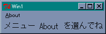
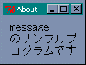
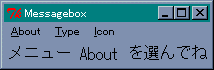
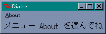
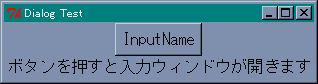
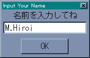

Perl/Tk は MainWindow->new() でメインウィンドウを生成しますが、このほかにも複数のウィンドウを生成することができます。新しいウィンドウは MainWindow->new() でも生成することができますが、この方法では最初のメインウィンドウとは独立したウィンドウ、つまり、新しいメインウィンドウとして扱われます。このため、最初のウィンドウを閉じても、新しいウィンドウはそのまま存在します。メインウィンドウと連動したウィンドウを生成するには、Toplevel メソッドを使います。
$sub_win = $main_win->Toplevel();
これで新しいウィンドウが生成されます。ウィンドウ $sub_win はメインウィンドウ $main_win から生成しているので、$main_win が閉じられると $sub_win も閉じられます。また、$main_win で設定したオプションは $sub_win でも有効です。あとはいままでのように、ウィンドウ $sub_win にウィジェットを配置します。
それでは簡単な例題として、アプリケーションの情報などを表示するためのウィンドウを作ってみましょう。メインウィンドウのメニュー About が選択されたら、新しいウィンドウを開いてメッセージを表示します。まず、メインウィンドウとメニューを設定します。
リスト : メインウィンドウとメニュー use Tk; $top = MainWindow->new(); $top->optionAdd( '*font' => 'FixedSys 14' ); $m = $top->Menu( -type => 'menubar' ); $top->configure( -menu => $m ); $m->command( -label => 'About', -under => 0, -command => \&message_window ); $top->Label( -text => 'メニュー About を選んでね' )->pack(); MainLoop();
ここまでは簡単ですね。ウィンドウの生成は関数 message_window で行います。次のリストを見てください。
リスト : ウィンドウの生成
sub message_window {
$sub_win = $top->Toplevel();
$sub_win->Message( -text => 'message のサンプルプログラムです' )->pack();
}
最初に Toplevel メソッドで新しいウィンドウ $sub_win を生成します。次に、Message メソッドでメッセージウィジェットを作りテキストを表示します。メッセージウィジェットはラベルと違い、複数行の文字列を表示することができます。デフォルトでは、縦と横の比率が 150 % になるように、文字列を表示する領域を調整します。この例では、-text で指定した文字列は 3 行に渡って表示されます。この比率を指定するオプションが -aspect です。
-aspect は -width よりも優先順位が低いので、-width の値が優先されます。メッセージウィジェットの場合、-width の値は文字数ではなくドット数になるので注意してください。
これでプログラムは完成です。たったこれだけで、メニュー About をクリックするとウィンドウが表示されます。
 メインウィンドウところが、このままでは都合の悪いことがあるのです。このウィンドウを表示したまま、もう一度 About をクリックしてみてください。もうひとつ同じウィンドウが表示されてしまいます。それから、ウィンドウに表示されるタイトルが Toplevel になっています。きちんとしたタイトルをつけた方が良いでしょう。
ウィンドウの状態を調べる場合、Tcl/Tk ではコマンド winfo を使いますが、Perl/Tk では winfo のサブコマンドに相当するメソッドが多数用意されています。ウィンドウの状態を調べるメソッドの一部を表に示します。
| $widget->geometry; | $widget の位置を文字列 (幅x高さ+x+y) で返す |
| $widget->width; | $widget の幅を返す |
| $widget->height; | $widget の高さを返す |
| $widget->x; | 親ウィンドウ内での $widget の x 座標を返す |
| $widget->y; | 親ウィンドウ内での $widget の y 座標を返す |
| $widget->rootx; | ディスプレイ上での $widget の x 座標を返す |
| $widget->rooty; | ディスプレイ上での $widget の y 座標を返す |
| Exists( $widget ); | $widget が存在するか |
geometry メソッドでウィジェットを指定した場合、返される座標はディスプレイを基準にした座標ではなく、そのウィジェットが配置されたウィンドウを基準にした座標となります。また、x, y メソッドでメインウィンドウを指定すると、ディスプレイ上での座標を返します。
このプログラムで必要になる、ウィンドウの存在を調べるメソッドは Exists です。たとえば、ウィンドウ $sub_win を調べるには、Exists( $sub_win ) とすればいいわけです。$sub_win が開いていれば真 (1) を、そうでなければ偽 (空文字列) を返します。
Tcl/Tk の場合、ウィンドウの設定はコマンド wm (Window Manager) で行いますが、Perl/Tk では wm のサブコマンドに相当するメソッドが多数用意されています。ウィンドウの状態を設定するメソッドの一部を表に示します。
| $window->withdraw; | ウィンドウを画面から取り除く |
| $window->deiconify; | ウィンドウを見える状態に戻す |
| $window->iconify; | ウィンドウをアイコン化する |
| $window->state; | ウィンドウの状態を返す(状態は normal, withdrawn, iconic) |
| $window->geometry(string); | ウィンドウを表示する位置を文字列で(幅x高さ+x+y)で指定する |
| $window->maxsize(幅, 高さ); | ウィンドウの最大値を指定 |
| $window->minsize(幅, 高さ) | ウィンドウの最小値を指定 |
| $window->resizable(真/偽, 真/偽); | 幅と高さの変更を許すか |
| $window->title(タイトル名); | ウィンドウのタイトルを指定 |
タイトルを設定するには title メソッドを使います。ウィンドウ $sub_win にタイトルをつけるには、$sub_win->title( 'タイトル' ); とすればいいわけです。
それではプログラムを改良してみましょう。
リスト：ウィンドウの生成（改良版）
sub message_window {
unless( Exists( $sub_win ) ){
$sub_win = $top->Toplevel();
$sub_win->title( 'About' );
$sub_win->Message( -text => 'message のサンプルプログラムです' )->pack();
}
}
まず Exists メソッドでウィンドウ $sub_win が開いているかチェックします。まだ開いていないのであれば、Toplevel でウィンドウを生成します。次に、title メソッドでタイトルを設定します。あとはいままでと同じです。実際にプログラムを実行すると、ウィンドウが開いた状態でメニュー about をクリックしても、新しいウィンドウは開きません。
 サブウィンドウ（改良版）前回は Toplevel メソッドで新しいウィンドウを作り、メッセージウィジェットでテキストを表示しました。ところで、短いテキストを表示するだけならば、もっと簡単な方法があります。それは メッセージボックス というダイアログを使うことです。
GUI アプリケーションの場合、ボタンを押すとかメニューを選ぶといった操作は、基本的にはユーザーが自由に行うことができます。ところが、ある操作をしないと次の処理に進めない場合があります。たとえば、画像を表示する場合、表示するファイル名をユーザーから入力してもらわないと、画像ファイルを表示することはできませんね。このようなときは、必要な操作を行ってもらうようにユーザーを誘導した方がよいでしょう。このときによく使われるのが ダイアログ (dialog) です。
ダイアログは重要なメッセージを表示するために開かれるウィンドウで、画面の前面に表示され、ユーザーがダイアログに応答しないかぎり、そのアプリケーションではほかの操作を行うことはできません。ダイアログは、ユーザーに特定の操作を強制したい場合には便利ですが、その反面、操作の自由度は減少します。使いすぎるとユーザーの不満が溜まることになるので注意してください。
メッセージボックスを表示するには、messageBox メソッドを使います。このメソッドを実行すると、メッセージを表示してユーザーがボタンを押すまで待ちます。messageBox のオプションを表に示します。
| オプション | 機能 | ||||||||||||
|---|---|---|---|---|---|---|---|---|---|---|---|---|---|
| -type |
| ||||||||||||
| -message | ダイアログに表示する文字列 | ||||||||||||
| -icon | ダイアログに表示するアイコン error, info, question, warning のいずれかを指定） | ||||||||||||
| -default | デフォルトボタンの名前を指定 | ||||||||||||
| -title | ダイアログのタイトルを指定 | ||||||||||||
| -parent | ダイアログを表示するウィンドウを指定 |
messageBox は押されたボタンの種類を文字列で返します。たとえば、種別に yesno を指定した場合、「はい」のボタンを押せば yes という文字列を返します。メッセージを表示するだけであれば、-type には ok を、-icon には info を指定すればいいでしょう。プログラムは次のようになります。
リスト : messageBox のサンプル
use Tk;
$icon = 'info';
$type = 'ok';
# ウィンドウの生成
sub message_window {
$top->messageBox( -type => $type, -icon => $icon, -title => 'About',
-message => 'messageBox のサンプルプログラムです' );
}
# 画面の設定
$top = MainWindow->new();
$top->optionAdd( '*font' => 'FixedSys 14' );
# メニューの設定
$m = $top->Menu( -type => 'menubar' );
$top->configure( -menu => $m );
$m->command( -label => 'About', -under => 0, -command => \&message_window );
$m1 = $m->cascade( -label => 'Type', -under => 0, -tearoff => 0 );
$m2 = $m->cascade( -label => 'Icon', -under => 0, -tearoff => 0 );
# メッセージボックスのボタンを指定するメニュー
$m1->radiobutton( -label => 'ok',
-variable => \$type, -value => 'ok' );
$m1->radiobutton( -label => 'ok, cancel',
-variable => \$type, -value => 'okcancel' );
$m1->radiobutton( -label => 'yes, no',
-variable => \$type, -value => 'yesno' );
$m1->radiobutton( -label => 'yes, no, cancel',
-variable => \$type, -value => 'yesnocancel' );
$m1->radiobutton( -label => 'retry, cancel',
-variable => \$type, -value => 'retrycancel' );
$m1->radiobutton( -label => 'abort, retry, ignore',
-variable => \$type, -value => 'abortretryignore' );
# メッセージボックスのアイコンを指定するメニュー
$m2->radiobutton( -label => 'info', -variable => \$icon, -value => 'info' );
$m2->radiobutton( -label => 'error', -variable => \$icon, -value => 'error' );
$m2->radiobutton( -label => 'question', -variable => \$icon, -value => 'question' );
$m2->radiobutton( -label => 'warning', -variable => \$icon, -value => 'warning' );
$top->Label( -text => 'メニュー About を選んでね' )->pack();
MainLoop();
メッセージウィジェットと違い、文字列はそのまま表示されます。文字列中に改行文字を含めれば、複数行に渡って表示することができます。-type と -icon はメニューで選ぶようにプログラムしたので、いろいろ試してみてください。
 メインウィンドウの画像このほかにも、ダイアログを作成する Dialog メソッドが用意されています。Dialog のオプションを表に示します。
| オプション | 機能 |
|---|---|
| -title | ダイアログのタイトルを指定 |
| -text | ダイアログに表示する文字列 |
| -bitmap | ダイアログに表示するビットマップ |
| -buttons | ボタン名 (文字列) を格納した配列へのリファレンス |
| -default_button | デフォルトボタンを指定 |
一般に、-bitmap には Tk で用意されているビットマップを指定します。イメージを指定することはできないので注意してください。ボタンはいくつでも設定することができ、配列に格納した順番で表示されます。
Dialog メソッドはダイアログを生成するだけで、ダイアログを表示しないことに注意してください。表示は Show メソッドで行います。Show メソッドはダイアログを表示し、押されたボタンの名前を文字列で返します。
それでは、Dialog を使ってメッセージを表示してみましょう。
リスト : Dialog のサンプル
use Tk;
use Tk::Dialog;
# ウィンドウの生成
sub message_window {
$dialog->Show();
}
# 画面の設定
$top = MainWindow->new();
$top->optionAdd( '*font' => 'FixedSys 14' );
# メニューの設定
$m = $top->Menu( -type => 'menubar' );
$top->configure( -menu => $m );
$m->command( -label => 'About', -under => 0, -command => \&message_window );
# ダイアログの生成
$dialog = $top->Dialog( -title => 'About', -bitmap => 'info',
-text => 'Dialog のテストです',
-buttons => ['Yes', 'No'], -default_button => 'Yes' );
$top->Label( -text => 'メニュー About を選んでね' )->pack();
MainLoop();
あらかじめ Dialog メソッドでダイアログを生成して変数 $dailog にセットします。そして、メニュー About が選択されたら、Show メソッドでダイアログを表示します。-bitmap には info を指定しました。このほかに、error, hourglass, questhead, question, warning などがあります。ボタンは Yes と No のふたつです。-default_button には Yes を指定しました。Yes のボタンを押すと、Show メソッドは文字列 Yes を返します。
 メインウィンドウの画像前回は messageBox と Dialog メソッドを使って、メッセージを表示するダイアログを作成しました。また、ファイル名の入力であれば getOpenFile と getSaveFile メソッドや、FileSelect ウィジェットを利用することができます。しかしながら、これだけではほかの操作、たとえばキーボードから名前やパスワードを入力する、といった処理には対応できません。この場合、自前のダイアログを作成することになりますが、このときに使うメソッドが grab と wait です。
グラブ (grab) はマウスやキーボードからの入力を、特定のアプリケーションやウィンドウにだけ割り当てる働きをします。グラブに関するメソッドを表に示します。
| $widget->grab; | $widget にローカルグラブを設定する |
| $widget->grabRelease; | $widget に設定されているグラブを解除する |
| $widget->grabCurrent; | グラブが設定されているウィンドウの名前を返す |
| $widget->grabGlobal; | $widget にグローバルグラブを設定する |
| $widget->grabStatus; | $widget のグラブ状態(none, local, global)を返す |
グローバルグラブをセットすると、グラブをセットしたアプリケーションしか操作することができません。ローカルグラブは、セットしたアプリケーションだけにしか影響しません。つまり、ほかのアプリケーションは自由に操作することができます。グラブを設定したウィンドウが廃棄されると、グラブは自動的に解除されます。参考文献 [4] には、次のように書かれています。
『グローバルグラブは解除を忘れると画面全体がロックする恐れがあるので使用しない方がよい。』
M.Hiroi が使用している Windows 版 Tk.pm Version 800.022 では、グローバルグラブを設定してもほかのアプリケーションの操作は可能でした。ほかの環境では不具合の原因になるかもしれないので、グローバルグラブは慎重に扱ってください。
wait は待ち合わせのためのメソッドです。表に示すように 3 つのメソッドがあります。
| $widget->waitWindow; | $widget が削除(destory)されるまで待つ |
| $widget->waitVisibility; | $widget の可視・不可視の状態が変化するまで待つ |
| $widget->waitVariable( refvar ); | 指定したグローバル変数に書き込みが行われるまで待つ |
grab と wait を組み合わせることで、ユーザーがデータを入力するまで待つといった処理を作ることができます。
簡単な例題を示しましょう。ボタンを押したら名前を入力するウィンドウを開くプログラムを作ります。これには 2 つの方法があります。ひとつは、ウィンドウを作っては壊す方法で、もうひとつは、あらかじめウィンドウを作っておいて、表示しては隠す方法です。この 2 つの方法でプログラムを作ってみましょう。
最初に、作っては壊す方法でプログラムを作ります。
リスト : ウィンドウを壊す方式(1)
use Tk;
# グローバル変数
$message = 'ボタンを押すと入力ウィンドウが開きます';
$buffer = '';
# 名前を入力する
sub input_name {
my $sub_win = &input_window();
$sub_win->waitWindow;
$message = "入力された名前は $buffer です";
}
# 画面の設定
$top = MainWindow->new();
$top->optionAdd( '*font' => 'FixedSys 14' );
$top->title( 'Dialog Test' );
$top->Button( -text => 'InputName', -command => \&input_name )->pack();
$top->Label( -textvariable => \$message )->pack();
MainLoop();
まずボタンとラベルを配置します。ボタンが押されたら関数 input_name を実行して、名前入力用のウィンドウを開きます。ウィンドウの生成は関数 input_window で行います。ウィンドウを開いたら、waitWindow メソッドを実行してウインドウが廃棄されるまで待機します。input_window は入力された名前をグローバル変数 $buffer にセットします。あとは、入力された名前を $buffer から取り出して、ラベル表示用のグローバル変数 $message にセットするだけです。
次は関数 input_window を作ります。
リスト : ウィンドウを壊す方式 (2)
# ウィンドウを作る
sub input_window {
my $sub_win = $top->Toplevel();
my $x = $top->x + 10;
my $y = $top->y + 10;
my $entry;
$buffer = '';
$sub_win->geometry( "+$x+$y" );
$sub_win->title('Input Your Name');
$sub_win->Label( -text => '名前を入力してね' )->pack();
$entry = $sub_win->Entry( -textvariable => \$buffer );
$entry->bind( "<Return>", ['destroy', $sub_win] );
$entry->focusForce;
$entry->pack();
$sub_win->grabGlobal;
$sub_win;
}
input_window は Toplevel メソッドでウィンドウを生成して、名前が入力されたらウィンドウを廃棄します。名前の入力はエントリーウィジェットを使います。入力用バッファとしてグローバル変数 $buffer を設定します。ウィンドウを開く位置は、メインウィンドウの近くがいいでしょう。x, y メソッドでメインウィンドウの位置を求め、作成するウィンドウの位置を geometry メソッドで設定します。
このプログラムではウィンドウの位置を指定するだけなので、幅と高さは省略しています。この場合、書式は "+$x+$y" となります。先頭の + は省略できません。また、メインウィンドウの位置を求めているので、x, y メソッドの返す座標はディスプレイを基準にしていることに注意してください。
あとは、入力フォーカスとグラブをセットします。一般の GUI アプリケーションでは、キー入力はアクティブになっているウィンドウに渡されます。Tk では、これを フォーカスウィンドウ (focus window) といいます。フォーカスウィンドウは、マウスの操作によって変更することができますが、focus メソッドによって設定することもできます。
| $widget->focus; | フォーカスウィンドウを $widget に設定する |
| $widget->focusCurrent; | フォーカスウィンドウを返す |
| $widget->focusForce; | フォーカスウィンドウを強制的に $widget に設定する |
focus メソッドはフォーカスウィンドウを設定します。forcForce メソッドは、フォーカスウィンドウを強制的に設定します。このメソッドを使うと、ほかのアプリケーションがアクティブになっている場合でも、指定したウィンドウがアクティブになります。このプログラムでは、エントリウィジェットに入力フォーカスを設定します。
リターンキーが入力されたならば、データ入力終了とみなしてウィンドウを destroy メソッドで廃棄します。この処理は、エントリーのリターンキーにバインドすればいいですね。これでプログラムは完成です。実際に試してみてください。
 メインウィンドウ今度は、表示して隠す方式で作ってみましょう。ウィンドウを作ったら withdraw メソッドでウィンドウを隠しておきます。そして、ボタンが押されたら deiconify メソッドでウィンドウを表示し、名前の入力が終わったならば、withdraw メソッドでウィンドウを隠します。
ところで、ウィンドウを隠す方法では問題点がひとつあります。それは、名前を入力するウィンドウで、右上隅の閉じるボタンを押したときの処理です。通常の動作では、このボタンが押されるとウィンドウが廃棄されるのですが、それでは困ってしまいますね。
Tk の場合、重要なイベントが起こった、もしくはこれから起こるというときには、そのイベントをアプリケーションに知らせる仕組みが用意されています。これを ウィンドウマネージャープロトコル と呼びます。ウィンドウが廃棄されるときは WM_DELETE_WINDOW というプロトコルが通知されます。アプリケーション側では protocol メソッドを使って、このプロトコルが通知されたときの動作を設定することができます。
$widget->protocol( protocol_name, callback );
WM_DELETE_WINDOW のデフォルトの動作がウィンドウを廃棄することです。このプロトコルに新しいコールバック関数を定義することで、閉じるボタンが押されてもウィンドウを廃棄せずに隠すことができます。
今回は、名前の入力が終了したらグローバル変数 $flag に 1 をセットすることにします。名前入力用ウィンドウを表示したら、waitVariable メソッドで $flag に値が書き込まれるのを待ちます。また、WM_DELETE_WINDOW が通知された場合も入力終了とみなして、$flag に 1 をセットすればいいでしょう。プログラムは次のようになります。
リスト : ウィンドウを隠す方式
# グローバル変数
$message = 'ボタンを押すと入力ウィンドウが開きます';
$buffer = '';
# ウィンドウを作る
sub make_window {
$sub_win = $top->Toplevel();
$sub_win->title('Input Your Name');
$sub_win->Label( -text => '名前を入力してね' )->pack();
$entry = $sub_win->Entry( -textvariable => \$buffer );
$entry->bind( "<Return>", sub { $flag = 1; } );
$entry->bind( "<Map>", sub { $entry->focusForce; } );
$entry->pack();
$sub_win->protocol( 'WM_DELETE_WINDOW', sub { $flag = 1; } );
$sub_win->withdraw;
}
Toplevel メソッドでウィンドウを生成して、ラベルとエントリーウィジェットを配置します。エントリーウィジェットで Return が入力されたら $flag に 1 をセットします。それから、ウィンドウが見える状態になったらエントリーにフォーカスを設定するため、もうひとつバインドを設定します。ウィジェットが見える状態になると発生するイベントが Map です。逆に、見えなくなると発生するイベントが Unmap です。よく使われるイベントを表に示します。
| イベント | 種類 |
|---|---|
| ButtonPress(Button) | マウスボタンが押されたときに発生 |
| ButtonRelease | マウスボタンが離されたときに発生 |
| KeyPress(Key) | キーが押されたときに発生 |
| KeyRelease | キーが離されたときに発生 |
| Motion | ウィジェット上でマウスが移動したときに発生 |
| Enter | マウスがウィジェットの内に入ったときに発生 |
| Leave | マウスがウィジェットの外に出たときに発生 |
| FocusIn | ウィジェットが入力フォーカスを得たときに発生 |
| FocusOut | ウィジェットが入力フォーカスを失ったときに発生 |
| Map | ウィジェットがスクリーンに現れたときに発生 |
| Unmap | ウィジェットがスクリーンから消えたときに発生 |
| Configure | ウィンドウの大きさが変更されたときに発生 |
あとは、protocol で WM_DELETE_WINDOW が通知されたら flag を 1 にセットするように定義し、withdraw メソッドで作成したウィンドウを隠します。それから、名前入力用ウィンドウはボタンが押される前に作っておかなければいけません。画面の設定が終わったら make_window を実行してウィンドウを作成しておきます。
関数 input_name はウィンドウを表示して、名前が入力されたらウィンドウを隠します。
リスト : 名前の入力
# 名前の入力
sub input_name {
my $x = $top->x + 10;
my $y = $top->y + 10;
$buffer = '';
$sub_win->geometry( "+$x+$y" );
$sub_win->deiconify;
$sub_win->grab;
$sub_win->waitVariable( \$flag );
$sub_win->grabRelease;
$sub_win->withdraw;
$message = "入力された名前は $buffer です";
}
まず geometry メソッドでウィンドウの位置を指定し、deiconify メソッドでウィンドウを見える状態にします。次にグラブを設定し、waitVariable メソッドでグローバル変数 $flag に書き込みが行われるまで待ちます。入力が終了したら、グラブを解除してウィンドウを隠します。ウィンドウを隠しただけでは、グラブは解除されません。ウィンドウを壊す方法とは違い、グラブの解除を忘れないでください。あとはメインウィンドウに入力された名前を表示します。
これでプログラムは完成です。実際に試してみてくださいね。
独自のダイアログを作成する方法を説明しましたが、今回のようにダイアログにウィジェットを設定するだけならば、Perl/Tk には DialogBox という便利なウィジェットが用意されています。前回説明した Dialog はメッセージとボタンを表示しましたが、DialogBox は任意のウィジェットを設置することができます。ウィジェットの設置は add メソッドで行います。
$widget = $dialog->add( 'widgetClass', options );
widgetClass には DialogBox に設置するウィジェットのクラス名、options でウィジェットのオプションを設定します。add メソッドは、ウィジェットを生成してそのオブジェクトを返します。ウィジェットの配置は、いままでと同じくジオメトリーマネージャで行います。add メソッドでウィジェットが配置されるわけではありません。ご注意ください。
DialogBox を使ったプログラムは次のようになります。
リスト : DialogBox ウィジェットの使用例
use Tk;
use Tk::DialogBox;
# グローバル変数
$message = 'ボタンを押すと入力ウィンドウが開きます';
$buffer = '';
# 名前を入力する
sub input_name {
$buffer ='';
$entry->focus;
$dialog->Show;
$message = "入力された名前は $buffer です";
}
# メインウィンドウの設定
$top = MainWindow->new();
$top->optionAdd( '*font' => 'FixedSys 14' );
$top->title( 'Dialog Test' );
$top->Button( -text => 'InputName', -command => \&input_name )->pack();
$top->Label( -textvariable => \$message )->pack();
# ダイアログの設定
$dialog = $top->DialogBox( -title => 'Input Your Name',
-buttons => ['OK'], -default_button => 'OK' );
$dialog->add( 'Label', -text => '名前を入力してね' )->pack();
$entry = $dialog->add( 'Entry', -textvariable => \$buffer );
$entry->pack();
MainLoop();
ダイアログは DialogBox メソッドで生成します。Dialog と違って、-text や -bitmap オプションは使用できません。必要なウィジェットは add メソッドで生成します。このプログラムでは、ラベルとエントリーウィジェットを使います。add メソッドで生成し、pack メソッドで配置します。エントリーのオブジェクトはフォーカスを設定するため必要になるので、グローバル変数 $entry にセットします。
ボタンを押したときに実行する関数 input_name では、エントリーウィジェット用の変数 $buffer をクリアし、focus メソッドでフォーカスを設定してから、Show メソッドでダイアログ $dialog を表示します。Show メソッドの返り値は押したボタンの名前です。
このように、DialogBox を使えば簡単にダイアログを作成することができます。
 DialogBox ウィジェット